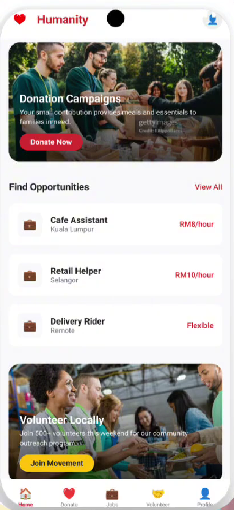
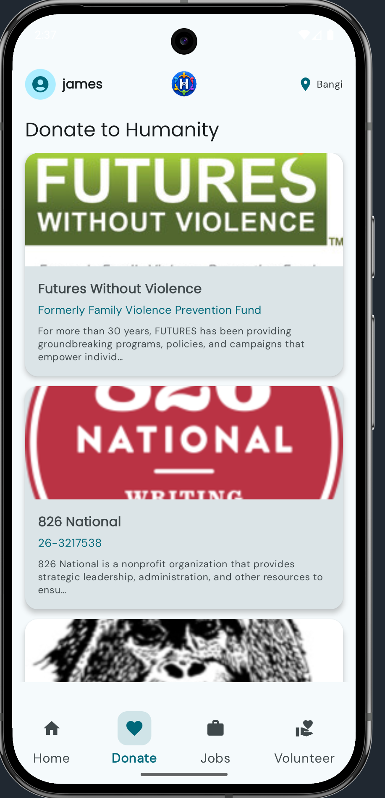
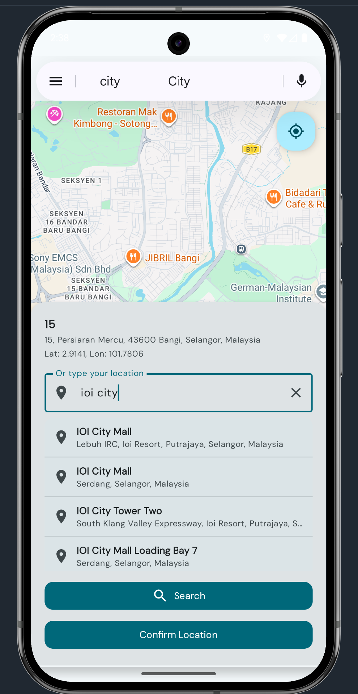

L 01

Software Engineering student at UKM, building Android apps with Jetpack Compose. Currently designing Humanity, a mobile platform for SDG 1 — No Poverty.
I'm a Software Engineering student exploring how mobile technology can carry social weight. Through this course I learned to design with Jetpack Compose, hold state with intent, follow Material guidelines, structure flow with ViewModels, and persist data with Room.
My ambition is simple — build software that quietly helps people. The labs taught me the craft; the project gave me the cause.
Humanity is a mobile app that fights poverty by uniting donations, jobs, and volunteer activities into one trusted place — so giving, working, and serving become a single tap away.
Each lab is a small idea, completed weekly. Together they shaped the foundation for everything that followed.
A project told in two parts — the foundation, then the full thing. Both circle the same purpose: making poverty smaller, one tap at a time.
Problem. Willing donors and volunteers don't always know where to give, how to find verified causes, or where to look for poverty-reducing job opportunities. Existing platforms scatter these moments across many apps.
What I built.
NavHostArchitecture matters early — separating screens, view models, and data sources from day one paid off.

Problem. Poverty in Malaysia is fed by unemployment, disaster, and limited access to support. Help exists — but it's fragmented. Humanity brings donating, working, and serving into a single trusted surface.
What ships.
Real apps are integration problems. Ship small, ship often, and design for bad networks.



A short reflection on how my thinking shifted between Lab 1 and Project 2.
Lab 1 was about painting a screen. By Lab 2 I was thinking in state — the single biggest mindset shift of the semester.
Material 3 stopped feeling like a rulebook and started feeling like a shared language between the user and me.
Lab 4 forced me to separate UI, logic, and navigation. I refactored Project 1 three times before it felt right — and that's where I grew most.
Room turned Humanity from a demo into something that remembers. Combined with Flow, the data layer felt alive.
Gradle errors at midnight. APIs that changed shape. Sensor permissions across versions. Each bug taught me to read errors instead of fearing them.
Code is leverage. A simple app can connect a donor to a flood victim, a job-seeker to an employer, or a volunteer to a community in need. That's the impact I want to keep building.
Drafts of writing, reflections, and parts of the supporting documentation were refined with ChatGPT and Gemini. All design decisions, code, and final wording were reviewed and personalised by the author.